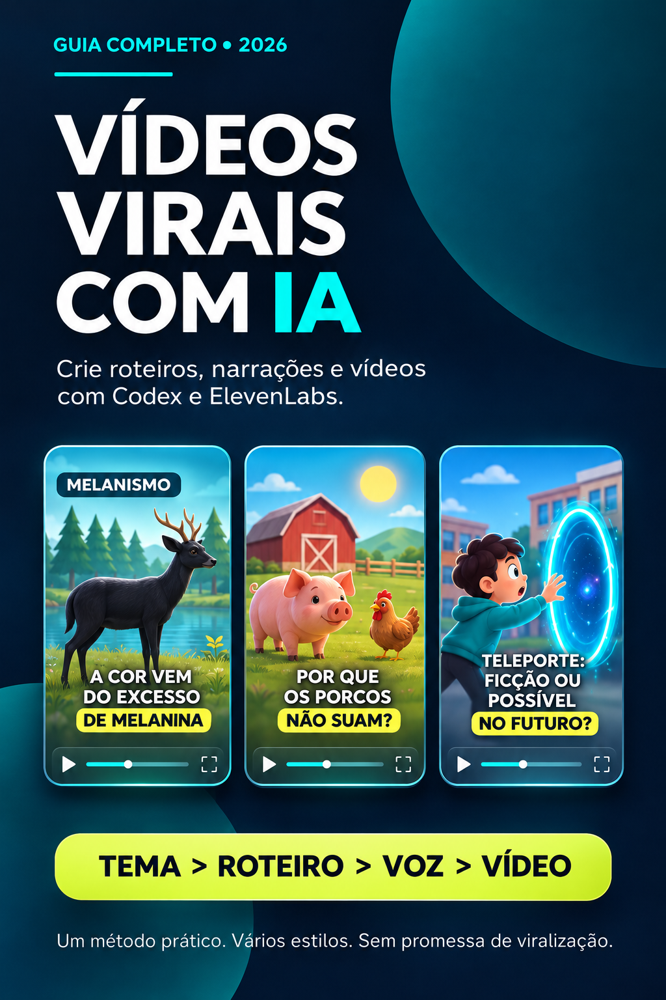

✷
Escolha um tema
Conte ao Codex o assunto, a duração e o tom do vídeo. Pode ser curiosidade, história ou explicação.
Aprenda a criar vídeos animados para TikTok, Reels e Shorts usando Codex + ElevenLabs — mesmo começando do zero, sem mostrar o rosto.

Assista ao tutorial de demonstração e conheça o processo na prática: da ideia e do roteiro à narração e ao vídeo final.
Pagamento processado pela Cakto. A página explica o método; os resultados dependem da criação de cada pessoa.
▶ Aperte o play para assistir com áudio.
Do primeiro pedido ao arquivo final: um fluxo simples que você aprende a repetir.
Conte ao Codex o assunto, a duração e o tom do vídeo. Pode ser curiosidade, história ou explicação.
O Codex escreve a narração e organiza as cenas. Você revisa o conteúdo antes de continuar.
Cole o texto no ElevenLabs, escolha uma voz e baixe o áudio da narração.
Envie o áudio, peça cenas sincronizadas e acompanhe a geração e exportação da animação pelo próprio Codex.
Trechos reais de vídeos criados com o fluxo explicado no guia. Aperte o play para assistir com som.
3D low poly · Animal
3D low poly · Fazenda
3D low poly · Curiosidade
Animação · História curta
Os vídeos exibidos são demonstrações autorais. Resultados visuais e tempos de geração variam conforme o projeto, o computador e as ferramentas disponíveis.
O estilo low poly pode ser um ótimo começo, mas o processo se adapta a diferentes propostas criativas. O que muda é a direção de arte que você pede.
Veja o que o guia ensina ↗Explicações sem complicação e instruções práticas para transformar um roteiro narrado em vídeo animado.
Um material digital para aprender no seu ritmo, sem mensalidade pelo e-book.
Guia + biblioteca de prompts para começar a produzir seus próprios vídeos.
Pagamento único • sem assinatura do e-book
Pagamento seguro realizado no checkout da Cakto
Importante: o preço de R$ 15 refere-se ao material digital. Ferramentas de terceiros podem ter custos ou limites de uso próprios. O e-book ensina um método; visualizações e ganhos não são garantidos.
Respostas diretas sobre o que você recebe e como o método funciona.
Aprenda o processo, crie sua identidade e desenvolva seus próprios vídeos.